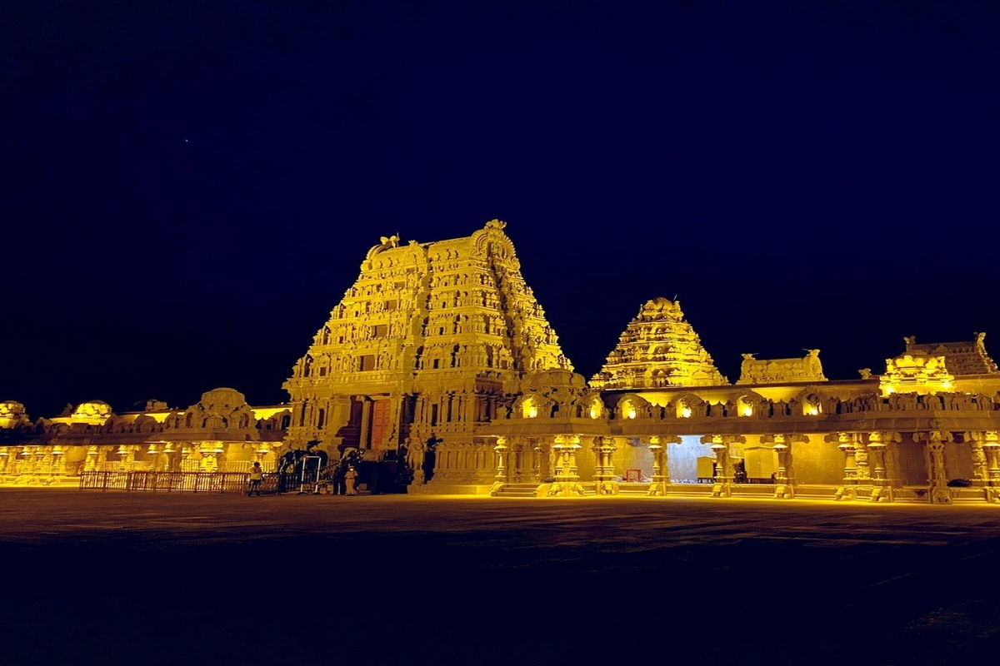
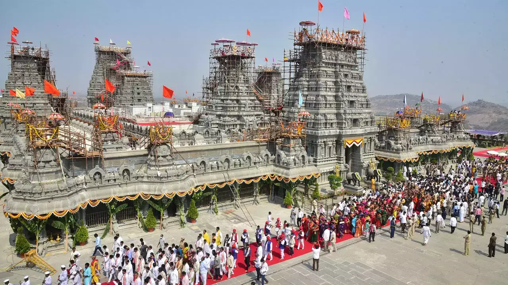
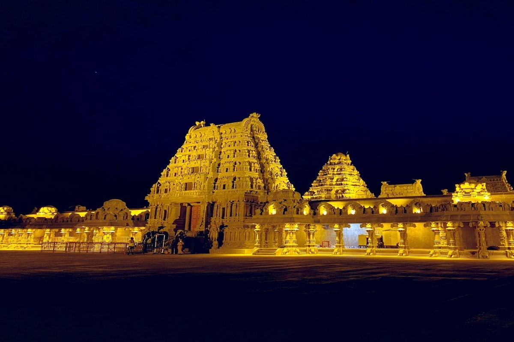
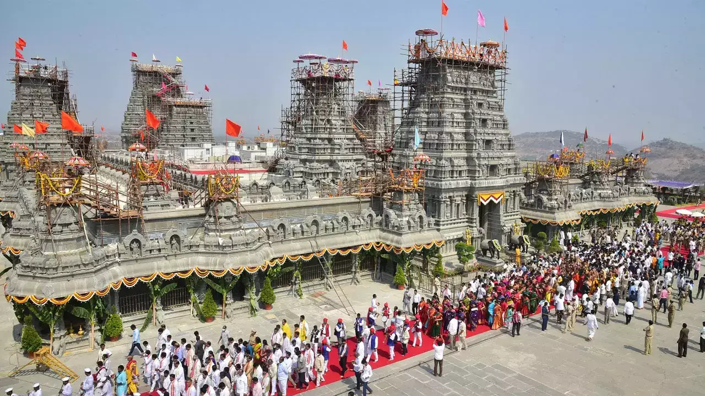
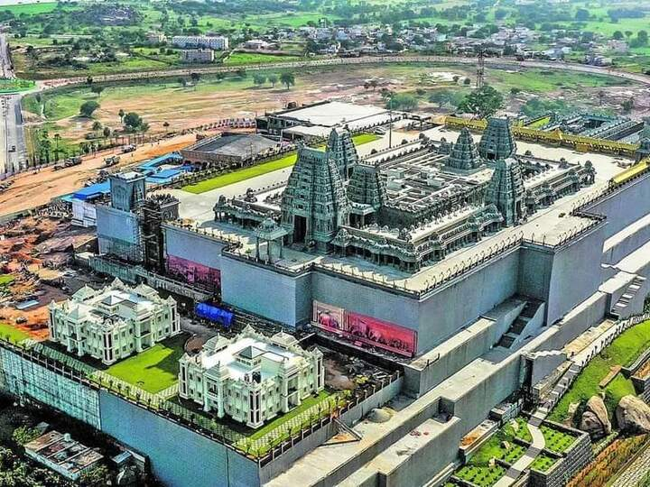
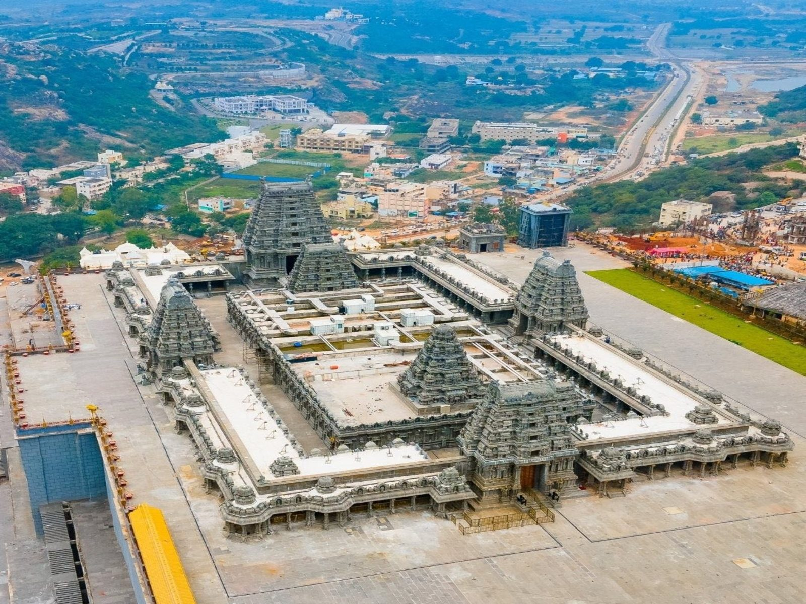
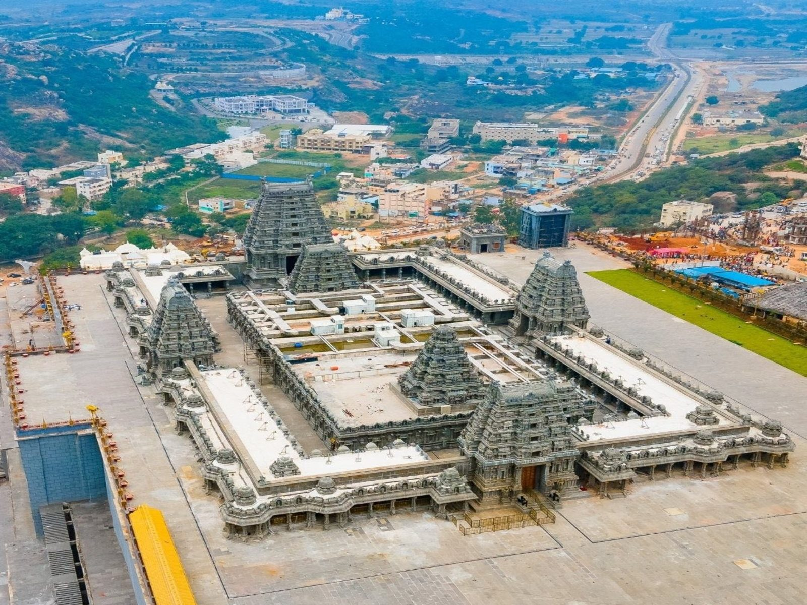 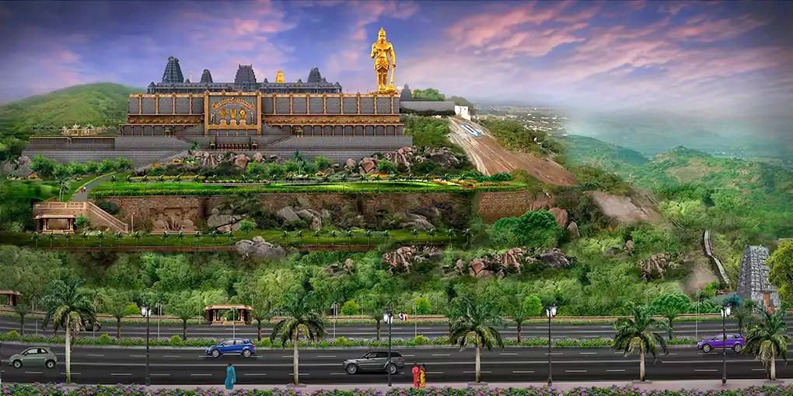
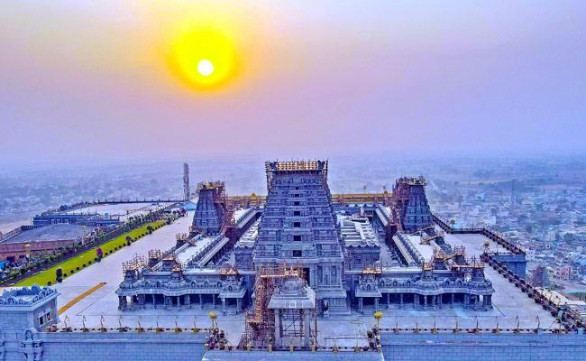
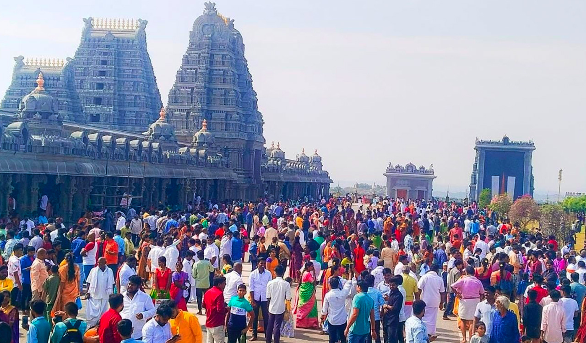

Yadagirigutta is well connected by both rail and road. It is about 55 km from Uppal, a major suburb of Hyderabad and 65 km from Mahatma Gandhi Bus Station at Hyderabad. A new bus stand is built on a 6.1 hectares (15 acres), as a part of new temple development. The proposed Hyderabad Regional Ring Road passes through Yadagirigutta. The nearest railway stations are Raigiri about 5 km away and Bhuvanagiri, a major town of Hyderabad Metropolitan Region about 13 km away. Raigir railway station has been renamed as Yadadri(YADD) by South Central Railway in line with the new nomenclature of the temple town. The Hyderabad MMTS - Phase II is planned, to be extended from Ghatkesar to Raigir station, which is 5 km from Yadagirigutta. A metro train is proposed between Uppal and Yadagirigutta.
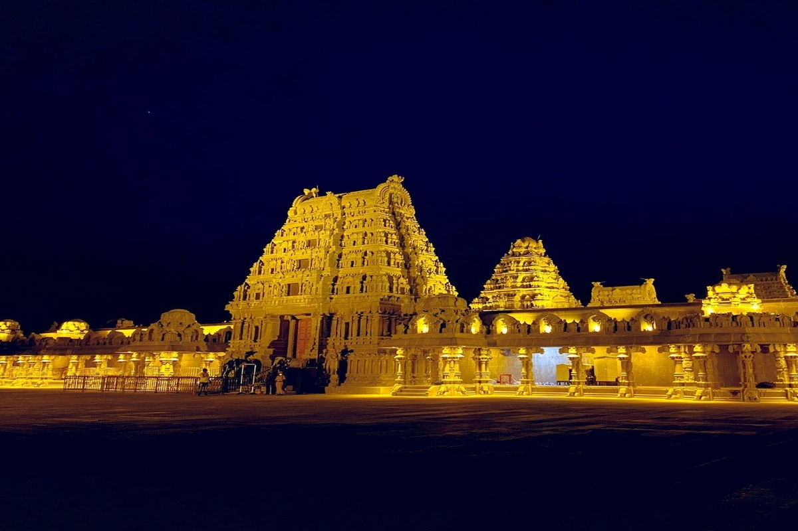
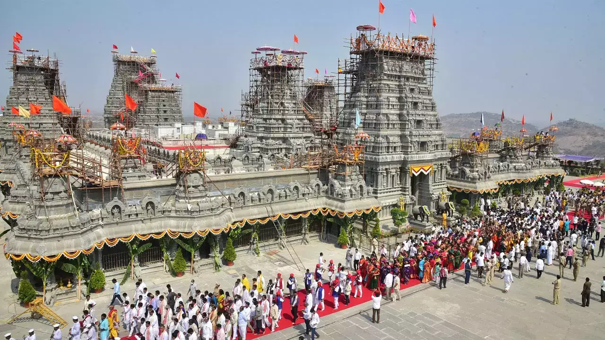
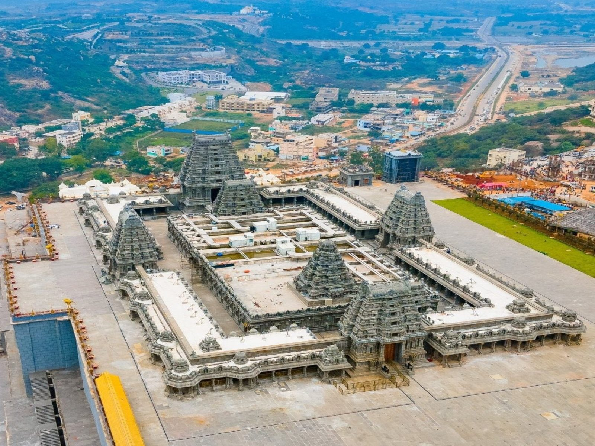